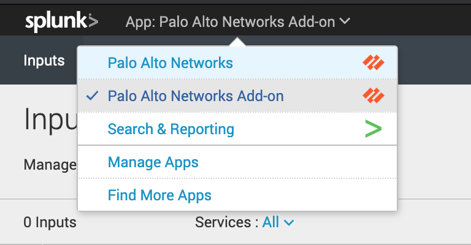
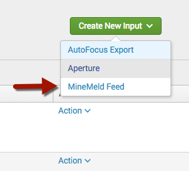
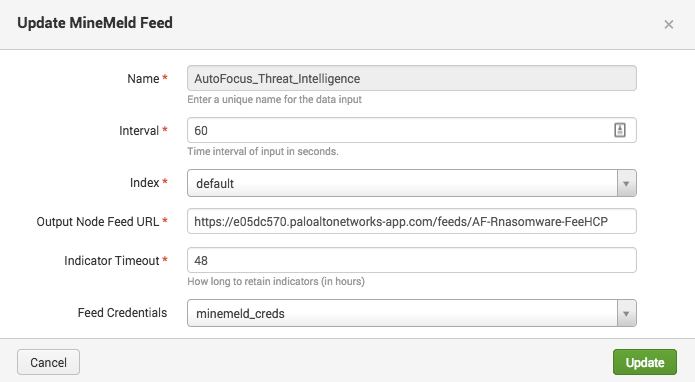

AutoFocus and MineMeld
Threat Intelligence can be leveraged in Splunk to correlate and tag logs as coming from a specific threat actor or campaign. This gives attribution and context to the events in Splunk.
MineMeld and AutoFocus are often used together to deliver Threat Intelligence. MineMeld is the delivery vehicle which can send Threat Intelligence from many sources into Splunk. AutoFocus is one of those possible sources of threat intelligence. Therefor, you can use MineMeld without AutoFocus to send 3rd party threat intelligence into Splunk.
You can use MineMeld on-premise or MineMeld hosted in AutoFocus.
Configure MineMeld output node
To send threat intelligence to Splunk, you have to tell MineMeld what indicators to send. This guide explains the basics of MineMeld: https://live.paloaltonetworks.com/t5/MineMeld-Articles/Quick-tour-of-MineMeld-default-config/ta-p/72042
Use MineMeld to mine data sources, aggregate those sources, then output to a standard output node. Configuration of the miners, processors, and output nodes is in the MineMeld documentation.
Once you've created an output node with indicators feeding to it, you'll need to get the output node's feed URL.
Create a MineMeld input in Splunk
Navigate to the Palo Alto Networks Add-on

Within the Add-on, click the Inputs tab at the top left. Then click Create New Input and then select MineMeld Feed.

Note
AutoFocus Export is another way to bring AutoFocus indicators into Splunk without MineMeld, using AutoFocus Export Lists which are manually curated lists of indicators. MineMeld Feeds convey the same information to Splunk, but automatically collect indicators from AutoFocus instead of using manually created export lists. It is recommended to use MineMeld instead of Export Lists.

Enter the settings for the MineMeld feed input:
| Field | Value |
|---|---|
| Name | Any friendly name (eg. "Autofocus_Threat_Intelligence") |
| Interval | Frequency in seconds to check for new logs (60 seconds recommended) |
| Index | This setting is ignored because the KVStore is used |
| Output Node Feed URL | The Feed URL from the previous step |
| Indicator Timeout | How long to retain indicators (in hours) |
| Global Account | Credentials for the Feed URL (optional) |
Click Add to save the MineMeld Feed input.
Verify MineMeld
Wait the interval time entered in the previous step, then click the Search tab at the top and enter the following search:
| `mm_indicators`
This should come up with a table full of indicators and data about those indicators.
AutoFocus Tags
AutoFocus categorizes threat indicators using tags including threat actors, malicious behaviors, campaigns, and malware families. These tags are part of the indicators from MineMeld above. This feature brings the tag metadata into Splunk, to get the complete picture of what each tag means.
Note
Requires MineMeld This feature does nothing without configuring a MineMeld input using the instructions above. The AutoFocus Tags collected by this AutoFocus API key consists of metadata about the tags retrieved from MineMeld. This metadata is not useful on its own without MineMeld.
AutoFocus tag metadata is easily collected by entering your AutoFocus API key into Splunk.
First, get the AutoFocus API key at https://autofocus.paloaltonetworks.com/#/settings.
Then, navigate to the Palo Alto Networks Add-on, then click the Configuration tab at the top. Click the Add-on Settings tab. Enter your AutoFocus API key into the field.
Verify AutoFocus Tags
AutoFocus tags are pulled at midnight every night by default. You can manually trigger a tag retrieval with this search:
| panautofocustags
To verify the tags have downloaded use this search:
| `pan_autofocus_tags`
This should come up with a table full of AutoFocus tags and data about those tags.